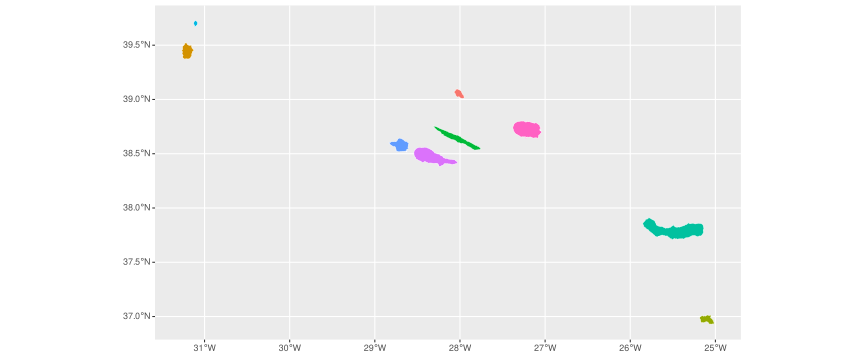

The goal of CAOP.RAA.2024 is to provide the official administrative boundaries of the Azores (Região Autónoma dos Açores (RAA)) as defined in the 2024 edition of the Carta Administrativa Oficial de Portugal (CAOP), published by the Direção-Geral do Território (DGT). The package includes convenience functions to import these boundaries as ‘sf’ objects for spatial analysis in R.
Installation
# install.packages("pak")
pak::pak("patterninstitute/CAOP.RAA.2024")Data
Districts (islands):
library(CAOP.RAA.2024)
library(ggplot2)
(districts <- districts())
#> Simple feature collection with 9 features and 6 fields
#> Geometry type: MULTIPOLYGON
#> Dimension: XY
#> Bounding box: xmin: -31.26882 ymin: 36.92763 xmax: -25.01318 ymax: 39.72618
#> Geodetic CRS: WGS 84
#> id district area perimeter n_municipalities n_parishes
#> 1 48 Ilha das Flores 14096.22 72 2 11
#> 2 49 Ilha do Corvo 1711.45 21 1 1
#> 3 41 Ilha de Santa Maria 9688.74 78 1 5
#> 4 42 Ilha de São Miguel 74457.50 230 6 64
#> 5 43 Ilha Terceira 40026.72 126 2 30
#> 6 44 Ilha da Graciosa 6065.78 44 1 4
#> 7 45 Ilha de São Jorge 24364.78 139 2 11
#> 8 46 Ilha do Pico 44479.53 153 3 17
#> 9 47 Ilha do Faial 17305.53 80 1 13
#> geometry
#> 1 MULTIPOLYGON (((-31.23111 3...
#> 2 MULTIPOLYGON (((-31.11414 3...
#> 3 MULTIPOLYGON (((-25.04616 3...
#> 4 MULTIPOLYGON (((-25.44238 3...
#> 5 MULTIPOLYGON (((-27.22931 3...
#> 6 MULTIPOLYGON (((-27.94872 3...
#> 7 MULTIPOLYGON (((-27.81177 3...
#> 8 MULTIPOLYGON (((-28.12348 3...
#> 9 MULTIPOLYGON (((-28.65557 3...
ggplot(mapping = aes(fill = district)) +
geom_sf(data = districts, col = "white") +
guides(fill = "none")
Municipalities:
(mun <- municipalities())
#> Simple feature collection with 19 features and 6 fields
#> Geometry type: MULTIPOLYGON
#> Dimension: XY
#> Bounding box: xmin: -31.26882 ymin: 36.92763 xmax: -25.01318 ymax: 39.72618
#> Geodetic CRS: WGS 84
#> First 10 features:
#> id municipality district area perimeter n_parishes
#> 1 4801 Lajes das Flores Ilha das Flores 7004.79 51 7
#> 2 4802 Santa Cruz das Flores Ilha das Flores 7091.44 52 4
#> 3 4901 Corvo Ilha do Corvo 1711.45 21 1
#> 4 4101 Vila do Porto Ilha de Santa Maria 9688.74 78 5
#> 5 4201 Lagoa Ilha de São Miguel 4559.32 45 5
#> 6 4202 Nordeste Ilha de São Miguel 10146.80 53 9
#> 7 4203 Ponta Delgada Ilha de São Miguel 23298.65 102 24
#> 8 4204 Povoação Ilha de São Miguel 10640.77 64 6
#> 9 4205 Ribeira Grande Ilha de São Miguel 18015.13 120 14
#> 10 4206 Vila Franca do Campo Ilha de São Miguel 7796.82 58 6
#> geometry
#> 1 MULTIPOLYGON (((-31.23101 3...
#> 2 MULTIPOLYGON (((-31.14735 3...
#> 3 MULTIPOLYGON (((-31.11414 3...
#> 4 MULTIPOLYGON (((-25.04616 3...
#> 5 MULTIPOLYGON (((-25.48391 3...
#> 6 MULTIPOLYGON (((-25.1418 37...
#> 7 MULTIPOLYGON (((-25.69689 3...
#> 8 MULTIPOLYGON (((-25.33571 3...
#> 9 MULTIPOLYGON (((-25.50498 3...
#> 10 MULTIPOLYGON (((-25.44258 3...
ggplot(mapping = aes(fill = municipality)) +
geom_sf(data = mun, col = "white") +
guides(fill = "none")
Parishes of the São Miguel islandÇ
(parishes <- parishes())
#> Simple feature collection with 156 features and 6 fields
#> Geometry type: MULTIPOLYGON
#> Dimension: XY
#> Bounding box: xmin: -31.26882 ymin: 36.92763 xmax: -25.01318 ymax: 39.72618
#> Geodetic CRS: WGS 84
#> First 10 features:
#> id parish municipality district area
#> 1 480107 Mosteiro Lajes das Flores Ilha das Flores 599.39
#> 2 480102 Fajãzinha Lajes das Flores Ilha das Flores 615.56
#> 3 490101 Corvo Corvo Ilha do Corvo 1711.45
#> 4 480204 Santa Cruz das Flores Santa Cruz das Flores Ilha das Flores 3967.96
#> 5 480201 Caveira Santa Cruz das Flores Ilha das Flores 328.48
#> 6 480203 Ponta Delgada Santa Cruz das Flores Ilha das Flores 1765.18
#> 7 480202 Cedros Santa Cruz das Flores Ilha das Flores 1029.82
#> 8 480106 Lomba Lajes das Flores Ilha das Flores 987.43
#> 9 480105 Lajes das Flores Lajes das Flores Ilha das Flores 1879.13
#> 10 480103 Fazenda Lajes das Flores Ilha das Flores 947.36
#> perimeter geometry
#> 1 12 MULTIPOLYGON (((-31.22781 3...
#> 2 13 MULTIPOLYGON (((-31.22545 3...
#> 3 21 MULTIPOLYGON (((-31.11414 3...
#> 4 37 MULTIPOLYGON (((-31.18002 3...
#> 5 10 MULTIPOLYGON (((-31.14663 3...
#> 6 25 MULTIPOLYGON (((-31.20772 3...
#> 7 18 MULTIPOLYGON (((-31.14518 3...
#> 8 18 MULTIPOLYGON (((-31.14663 3...
#> 9 24 MULTIPOLYGON (((-31.1695 39...
#> 10 15 MULTIPOLYGON (((-31.15802 3...
parishes |>
dplyr::filter(district == "Ilha de São Miguel") |>
ggplot(mapping = aes(fill = parish)) +
geom_sf(col = "white") +
guides(fill = "none")